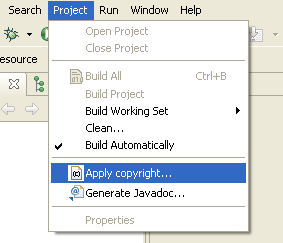
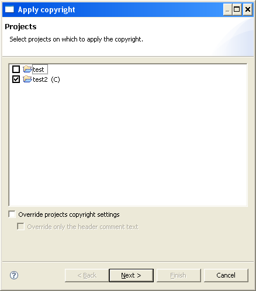
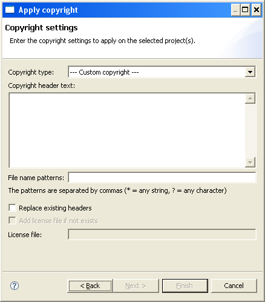
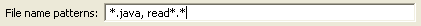
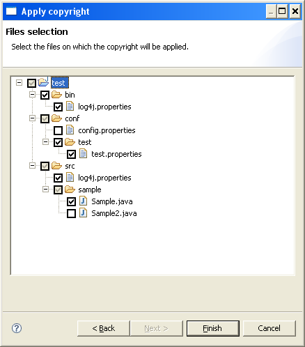

Copyright wizard
The wizard is launched from the menu: Project -> Copyright Wizard...

First page - Projects selection
The first page of the wizard lets you select one or more projects on which to
apply the copyright.

| Parameter | Description |
|---|
| Projects selection list |
Projects having copyright settings are marked in the selection list by a
"(C)" postfix on the projet name.
|
| Override projects copyright settings |
If checked, all projects copyright settings (headers text and formats)
defined on selected projects will be override by the settings defined
in the following page of the wizard.
|
| Override only the header comment text |
This checkbox is enabled only if the previous one is checked.
If checked, the override of project copyright settings is limited to the
header comment text. All the header formats defined in the projects
preferences will be used by the wizard for the corresponding projects.
|
Second page - Copyright parameters
The second page of the wizard lets you define the parameters of copyright to
be applied to the selected projects.
It is possible to define a completely specific copyright, or select a
preconfigured copyright in the preferences of the wizard.

| Parameter | Description |
|---|
| Copyright type |
Selection list of copyright to apply. This list allows you to select one
of the preconfigured copyrights in the preferences, or to choose the
definition of a specific copyright (--- Custom copyright ---).

|
| Copyright header text |
Text of comment header to be applied to the selected files. This field
is pre-initialized with the text defined in preferences for the selected
copyright. It may, however, be changed if desired.

The text should not contain formatting comment characters.
|
| File name patterns |
Patterns of filenames on which apply the comment header. This parameter
is mandatory. To select all the resources, set it to "*".

|
| Replace existing headers |
This flag is used to indicate whether the wizard will replace the
existing header files (checked) or if they should not be modified
(unchecked).
The recognition of the existence of a header comment in a file is made
by comparing the 5 first characters in the first line of the file (or
the second one if the parameter "Do not override the first line" is
checked in the corresponding format) with the 5 first characters of the
first line defined in the header comment format.
|
| Add license file if not exists |
This flag allows you to add to selected projects a license file if no
file with the same name already exists.
This parameter is usable only for preconfigured copyrights having a
license file defined.
|
| License file |
Name and path of the license file to create.
This parameter is used only if the previous parameter has been selected.
It is initialized by the file name defined in preferences settings for
the selected copyright.
|
Third page - Files selection
The wizard filters with the files pattern the files on which to apply the
comment header. If the "Replace existing headers" has been checked, the files
containing already a comment header are eligible for treatment. Otherwise they
are also excluded from the pre-selection.
The last page of the wizard enables you to refine the selection. It presents
the files filtered by the wizard.

The user has the possibility to unselect files or directories on which apply
the comment header.
In the previous screenshot, files config.properties and Sample2.java were
unselected and will therefore not be treated.
Finally click on Finish to start treatment on the selected files.
Example Java file before treatment:

Example Java file after treatment: